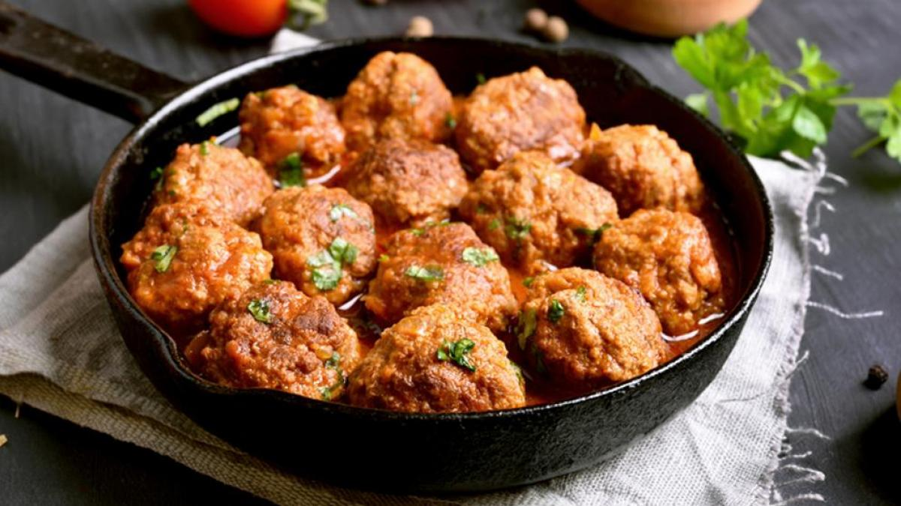

Albondigas

Receta de Albondigas
Estas deliciosas albóndigas de cóctel desaparecerán rápidamente de tu fiesta navideña. Mi madre las prepara todos los años para la víspera de Año Nuevo, y ahora yo también.
Quedan muy bien en una olla de cocción lenta, ya que puedes cocinarlas a fuego lento antes de servirlas y mantenerlas calientes durante toda la fiesta.
Ingredientes
1 libra de carne molida magra
>½ taza de pan rallado
>3 cucharadas de cebolla picada
>2 cucharadas de agua
>1 huevo grande
>1 lata (8 onzas) de salsa de arándanos en gelatina
>¾ taza de salsa de chile
>1 cucharada de azúcar moreno
>1 ½ cucharadita de jugo de limón
Intrucciones
- Reúne los ingredientes. Precalienta el horno a 350 grados F (175 grados C).
- Mezcle la carne molida, el pan rallado, la cebolla, el agua y el huevo en un bol grande. Forme albóndigas pequeñas y colóquelas en una bandeja para hornear antiadherente. Hornee en el horno precalentado durante 20 a 25 minutos, dándoles vuelta una vez.
- Mezcle la salsa de arándanos, la salsa de chile, el azúcar morena y el jugo de limón en una cacerola grande a fuego lento hasta que quede una mezcla homogénea. Agregue las albóndigas; cocine a fuego lento durante 1 hora antes de servir.